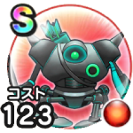

デュランダル
12章6話(ボス)覚醒千里行ボーンファイター編こころ最大コスト+4スキルの斬撃・体技ダメージ+10%イオ属性斬撃・体技ダメージ+7%ジバリア属性斬撃・体技ダメージ+7%攻撃減耐性+10%【二刀】イオ属性斬撃・体技ダメージ+4%【両】ジバリア属性斬撃・体技ダメージ+5% / 9.5点
くわしい特徴
【ランク特殊効果】 こころ最大コスト+4スキルの斬撃・体技ダメージ+10%イオ属性斬撃・体技ダメージ+7%ジバリア属性斬撃・体技ダメージ+7%攻撃減耐性+10%【二刀】イオ属性斬撃・体技ダメージ+4%【両】ジバリア属性斬撃・体技ダメージ+5%